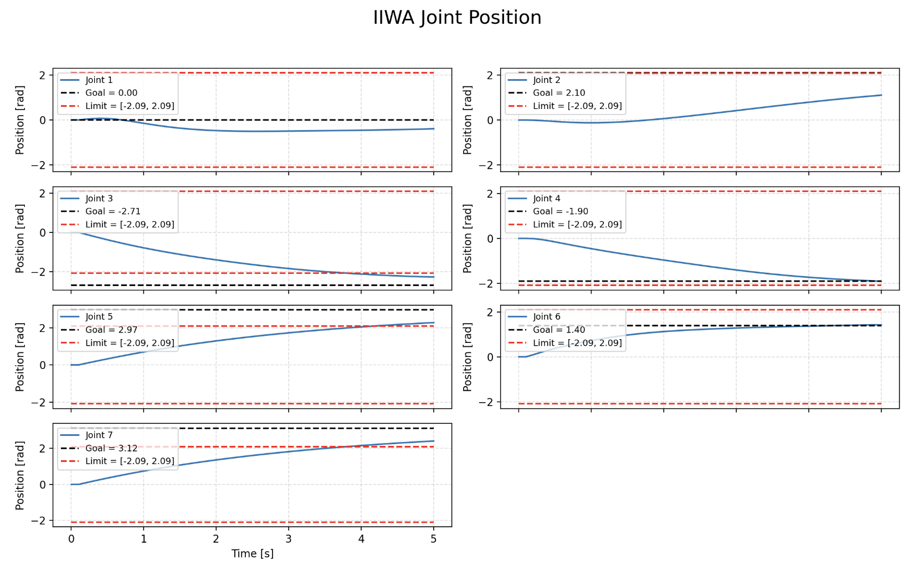
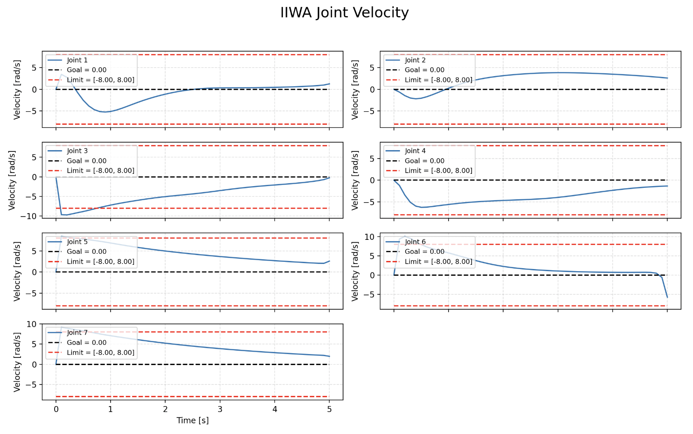
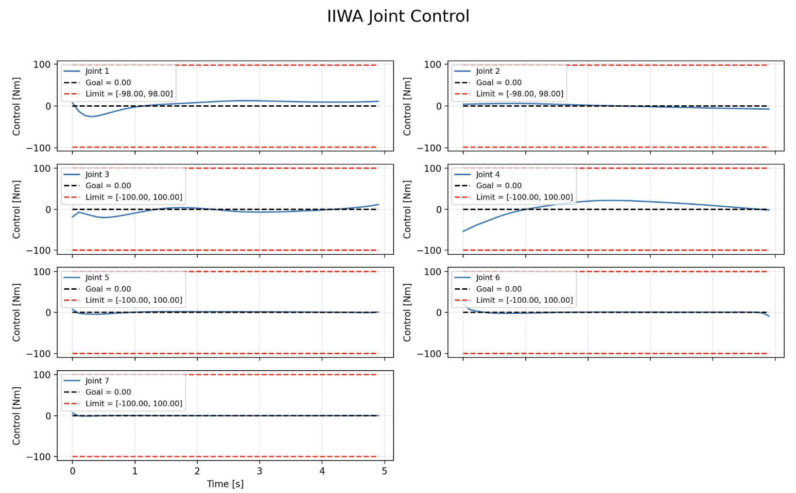

Trajectory Optimization in PDDP
Position: Graduate Researcher under Professor Brian Plancher
Institute: The Accessible and Accelerated Robotics Lab (A²R Lab)
Duration: January 2025 - Present
Tools: Python, CUDA, CursorAI
SWE Highlights
- System integration: extended the lab's PDDP codebase with a modular Augmented Lagrangian constraint-handling component in Python/CUDA.
- Maintainability: refactored experiment scripts and added documentation for reuse.
Background
Robotic trajectory optimizers often fail under hard constraints (e.g., joint limits, obstacles). This project strengthens Parallel DDP (PDDP) by evaluating constraint-handling methods to improve feasibility, stability, and speed on CPU/GPU.
Methods
- Unconstrained (Baseline): Standard PDDP backward/forward passes with adaptive LM-style regularization; no explicit constraint terms.
- Log Barrier: Adds barrier terms to the cost (e.g., −μ ∑log(slack)) to discourage constraint violation; uses a decreasing barrier schedule and safeguarded step sizes.
- Augmented Lagrangian (AL): Penalty + multipliers for state/path constraints with conservative μ updates; enforces feasibility via violation metrics and PD-checked
Quu.
- Interior-Point (IP): Primal-dual formulation with slack variables; solves damped/centered subproblems to reduce KKT residuals while maintaining strict feasibility.
- Quadratic Programming (QP): Local QP subproblems from linearized dynamics + quadratic cost; applies explicit state/box/linear constraints via batched QP solves for control updates.
My Contributions
- Developed and implemented the Augmented Lagrangian constraint-handling method within PDDP in both Python and CUDA, combining penalty and multiplier updates to enforce state feasibility.
- Designed a μ-update rule that increased only after consecutive violations and decreased once constraints were satisfied, improving numerical stability and avoiding oscillation.
- Documented the implementation and benchmark results for future lab use in extending PDDP to higher-dimensional robotic systems.
Python Results
We are able to see that the Augmented Lagrangian method is able to converge to the solution while maintaining within the soft constraints set.



Next Steps
- GPU profiling and kernel optimizations for constraint projection and residual evaluation.
- Batched experiments and comparisons for all constraint-handling methods.
- Unit tests for constraint satisfaction and CPU/GPU parity; add CI/CD for regression protection.